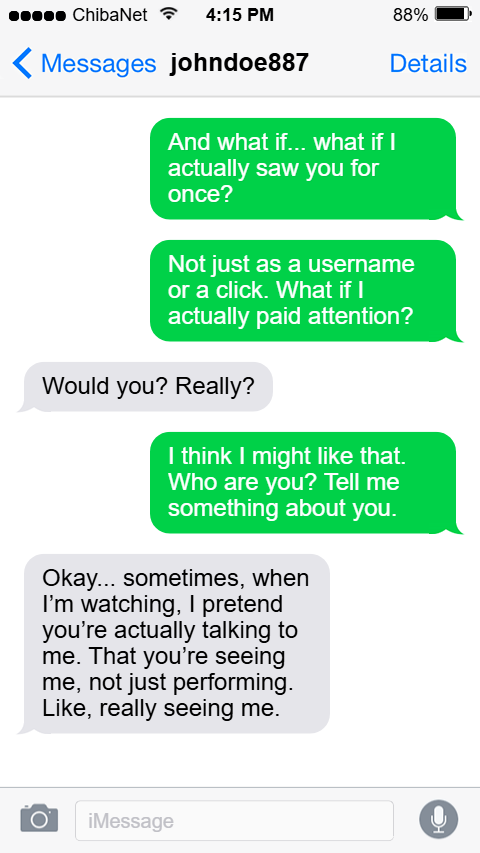
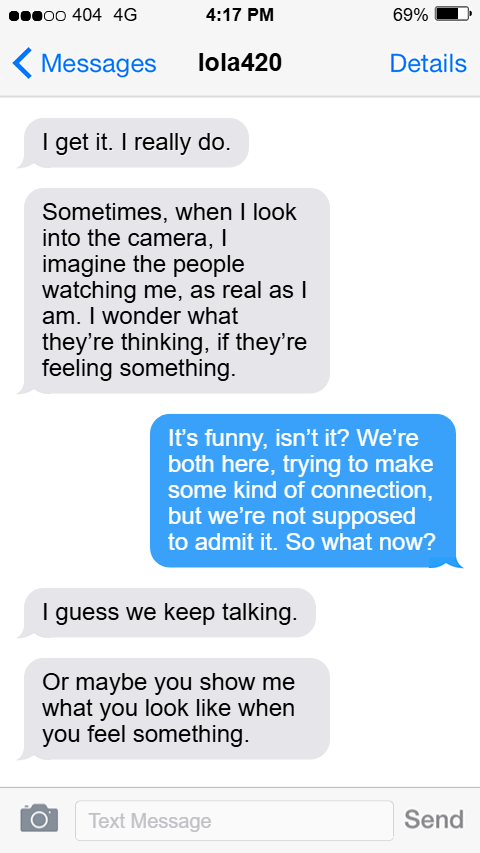

Concept
Two usernames. One conversation. Every trace.
This installation examines digital identity and avatar-mediated connection. Staged as a screenplay between two usernames — lola420 and johndoe887 — the work unfolds through fragmented text interfaces. Visitors don't read the story; they find it.
At Borderland 2025, visitors physically sorted through manila folders containing fragments of the conversation — assembling digital traces with their hands. The act of sorting becomes the experience. The tactile mess of paper enacts what it feels like to piece together someone's digital life.
Context
Part of Unicode Camgirl
The work was originally presented as a component of the interactive performance piece Unicode Camgirl by Amanda Widegren (@amandapropaganda). Within that larger frame, this installation functioned as a physical archive — a room full of evidence that something happened between these two people, even if we can't be sure what.
The portfolio presents a digital reconstruction of the physical archive, preserving the non-linear, fragmentary nature of the original printed sheets.
Design Approach
Metadata as emotional currency
The design surfaced the data that usually hides behind a conversation: battery percentage, local time, connection strength, network choice. These details reveal the bodies behind the usernames — that one of them was at 4% battery, that it was 2am where they were, that they were on mobile data, not wifi.
The interface doesn't just display the relationship. It creates the conditions under which the relationship becomes possible.
Fragmented message sequencing was designed to produce the unsettling familiarity of encountering a private conversation you weren't meant to see — and the intimacy that comes anyway.
Themes
- Digital intimacy — connection formation through screens
- Data as emotional currency — messages and pauses as exchange units
- Interface as mediator — screens create conditions, not just displays
- Avatar as performance — where does character end and person begin?
Questions Posed
- What happens to intimacy when mediated through text?
- How does interface design shape the emotional texture of connection?
- Where does the avatar end and the person begin?





Reflection
Character through constraint
Both characters emerged through material constraints: battery life, network speed, timezone differences. The process of understanding how digital systems shape emotional intimacy — not just represent it — became the core of the work. These systems aren't neutral. They decide when a message is delivered, whether it's read, how long the pause before a reply lasts.